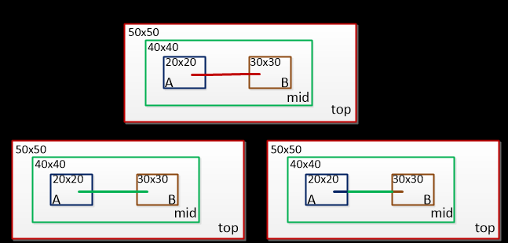

DC相关理解（二）
本文最后更新于：2023年11月3日 晚上
- 参考
1. 线负载模型
- 根据模型中提供的扇出-线网长度对应表，可以根据线网扇出负载估计线网长度。
- 根据线网长度和阻抗、容抗、面积对应表格计算线上参数和延时信息。
- 根据延时计算方式，电容和电阻有不同的组合方式，主要有三种模型：
- worst_case_tree
- best_case_tree
- balanced_tree
- 指令如下，-name为指定线负载模型名字，来源于工艺库，-library指定工艺库。
1
set_wire_load_model -name $WIRE_LOAD_MODEL -library $LIB_NAME - 按照模块内部子系统net所采用模型分类

- TOP
- 该模式下，内部所有的子模块或者子系统都将会使用TOP层所设置的线负载模型，因此会覆盖所有的子模块的设置值。
- 由于top层电路规模最大，如果子模块也使用其线负载模型计算，那么最悲观。
- ENCLOSED
- 该模式下，会默认选择能够cover整个net路径层次的线负载模型，并不一定是TOP层；
- 相较于TOP模式下，延时要短一些。
- SEGMENTED
- 该模式下，则严格根据所设置对象的范围分别使用对应的线负载模型；
1
set_wire_load_mode enclosed
- 该模式下，则严格根据所设置对象的范围分别使用对应的线负载模型；
- 也可以使用默认的线负载模型，指令如下；DC工具在默认情况下会根据设计的cell面积自动选择合适的线负载模型。
1
set auto_wire_load_selection true - 线负载模型的设置在综合阶段可以初步的衡量net的延迟，但是在Routing之后，可以使用寄生参数提取工具，如STARRC抽取的SPEF文件，往往用于STA，根据其寄生参数计算net delay，此时的值会更加具备参考性。
2. 时钟属性
- 时钟不确定性（uncertainty）包括skew和jitter。
- 对于建立时间，考虑的时钟不确定需要包括受前级和本级skew值的影响、本级jitter值以及建立时间裕量。
- 由于是建立时间，需要考虑前级寄存器时钟skew往后移Aps，本级寄存器时钟往前移Bps，那么skew所导致的不确定时间为(A+B)ps。
2.1 时钟偏移（skew）
- 由于线网等延时，导致时钟信号到达寄存器口存在相位差。
- 其与时钟频率没有直接关系，与时钟线的长度及时钟线驱动的时序单元负载电容、个数有关。
- skew 可以分为四类。
- Interclock skew
- 不同时钟域之间两条路径的最大skew。
- Global skew
- 同一个时钟域下，任意两条路径的最大skew。
- Local skew
- 同一个时钟域下，任意两条有时序关系的路径的最大skew。
- Useful skew
- 可以在ICC，设置指令skew_opt。向前或者向后 slack较为充裕的路径借时间来修正violation。具体指令使用可见ICC userguide 5-159页。
- Interclock skew
- 更多关于skew对建立、保持时间影响的可以看这篇博客。
- 总结来说，Positive skew，setup检查宽松，hold检查更严格。Negative
skew，setup检查严格，hold检查更宽松。
- Postive和Negative的划分是根据时钟分支点到launch寄存器和capture寄存器skew大小的比较；前者<后者，则为Positive；后者<前者，则为Negative。
- 总结来说，Positive skew，setup检查宽松，hold检查更严格。Negative
skew，setup检查严格，hold检查更宽松。
2.2 时钟抖动（jitter）
- 不随时间积累，时而超前、时而滞后的偏移。与时钟频率也无直接关系。
- 包括随机抖动和固定抖动
- 随机抖动来源于：热噪声、Flicker Noise等，与电子器件和半导体器件的电子和空穴特性有关。选择合适的工艺可以得到更小的随机抖动。
- 固定抖动来源于：开关电源噪声、串扰、电磁干扰等。可以通过优化设计改善固定抖动；如选择合适的电源滤波方案、合理的PCB布局布线。
2.3 时钟延迟（latency）
- 时钟信号从时钟源（例如：晶振）触发到达触发器时钟端口的延时，为时钟延迟。
主要包括时钟源延迟（source latency）和 时钟网络延迟（network latency）。
2.4 CTS之前 模拟时钟树的建模
- （1）clk transition，模拟时钟树的驱动能力和负载。
- （2）clk uncertainty，主要是模拟skew。
- （3）clk latency，模拟时钟树线网延时。
3. 时序约束实例
3.1 路径2的约束
- 为了满足FF2的建立时间要求，触发器翻转时间 $ T_{clk2q}$ +寄存器和寄存器之前的组合逻辑延时 $ T_{logic}+t_{setup-FF2}$ ＜ 时钟周期。
- 保持时间一般是满足的，因为传输的延时(\(T_{clk2q}+T_{logic}\))一般都会大于触发器的保持时间。
3.2 路径1的约束
- 首先需要告诉DC被综合模块外的延时为 \(T_{clk2q}+T_M\)，留下的时间为 \(T_{clk}-T_{clk2q}-T_M\)，将其与 \(T_n+T_{setup}\) 时间相比较，如果 \(T_n\)
太大，那么DC会对其进行优化，如果最优解也大于留下的时间，那么就会报错。
- 假设我们已知输入端口外部电路的延迟为4ns，那么可以使用DC的约束指令
1
2
3set_input_delay -max 4 -clock CLK [get_ports A]
set_input_delay 3.5 -max -clock clk1 [remove_from_collection [all_inputs][get_ports clk1]]
# 命令表示从所有的输入端口中除掉时钟clk
- 假设我们已知输入端口外部电路的延迟为4ns，那么可以使用DC的约束指令
- 前面介绍的是不考虑不确定因素的情况，当考虑时钟不确定性，有以下分析
- 假设时钟不确定时间为U，假设触发器的建立时间为1ns，外部输入延时为D，那么内部N逻辑所允许的最大延迟S为：
- \(S = T_{clk}-D-U-1\)
- 假设时钟不确定时间为U，假设触发器的建立时间为1ns，外部输入延时为D，那么内部N逻辑所允许的最大延迟S为：
3.3 路径3的约束
告诉DC要综合的模块外部电路延时为 \(T_t+T_{FF3setup}\) 留下的时间为 \(T_{clk}-T_t-T_{FF3setup}\) 时间，将这个值与\(T_{clk2q}+T_s\) 相比较，如果 $ T_s$ 太大，那么DC会对其进行优化，如果最优解也大于留下的时间，那么就会报错。
- 假设DC约束指令如下
1
2create_clock -period 20 [get_ports Clk]
set_output_delay -max 7.0 -clock Clk [get_ports B]
- 假设DC约束指令如下
上面是没有考虑时钟不确定的，假设综合模块内部延时为S（包含 \(T_{clk2q}\) 和组合逻辑延时），外部输出延时为X（包括外部组合逻辑和后级寄存器的建立时间），时间不确定度为Y，时钟周期为T。
- 满足 \(T-S-Y=X\)。
3.4 路径4的约束
- 分为两种情况
模块内部除了从输入到输出的组合逻辑外还有时序逻辑。
1
2
3set_input_delay 0.4 -clock CLK -add_delay [get_ports B]
set_output_delay 0.2 -clock CLK -add_delay [get_ports D]
set_max_delay $CLK_PERIOD -from [get_ports B] -to [get_ports D]- DC计算 $ T>E+F+U+G $（其中U为不确定时间）。
模块内部都是组合逻辑，没有时序逻辑，这种需要使用虚拟时钟的概念。
DC相关理解（二）
http://binbinqian.cn/2023/11/02/DC相关理解（二）/